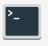
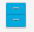
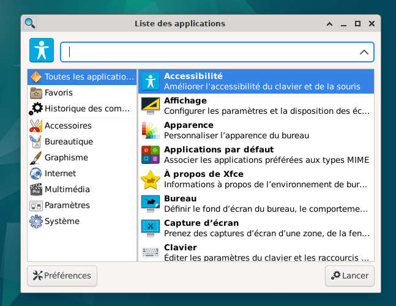
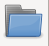
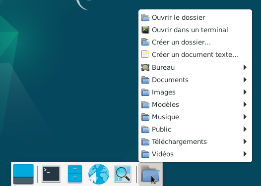

&
Description du tableau de bord 2, celui du bas : Le site Xfce.
Sur ce tableau de bord 2, il y a 6 éléments.
Le premier : Permet de se rendre directement sur le bureau lorsque plusieurs applications sont ouvertes.
Le second : ouvre le Terminal

Le troisième : ouvre le Gestionnaire de fichiers Thunar

Le quatrième : lance le navigateur web




Informations sur le logiciel libre et Merci.
Marques déposées :
Ce site ne fait pas partie de Debian, n'est pas produit par le projet
Debian, ni approuvé par le projet Debian.
Ce site n'est pas affilié à Debian. Debian est une marque déposée appartenant
à Software in the Public Interest, Inc.
Contribuer :
Ce site ne fait pas partie de XFCE, n'est pas produit par le projet
XFCE, ni approuvé par le projet XFCE.
Ce site n'est pas affilié à XFCE.
Ce site est juste réalisé par un passionné.